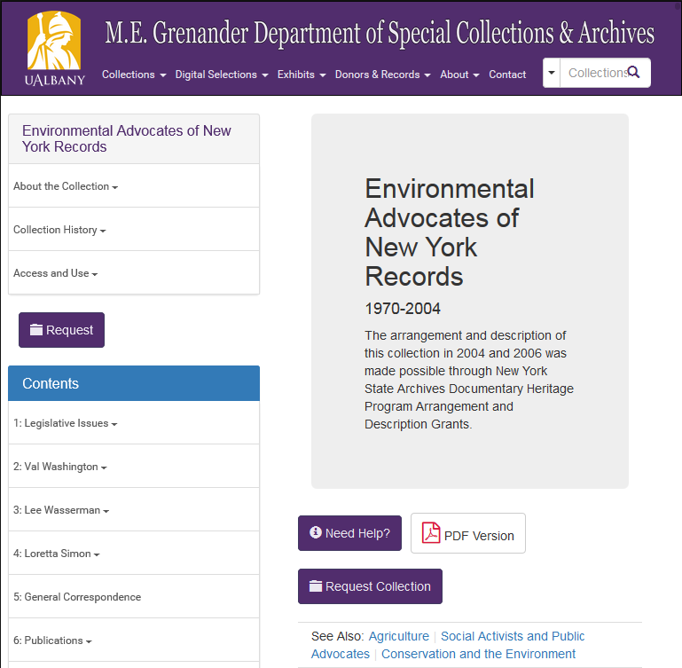
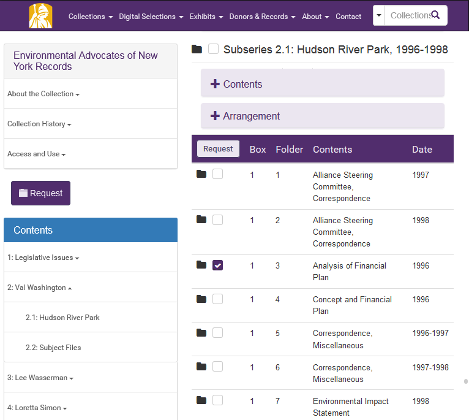
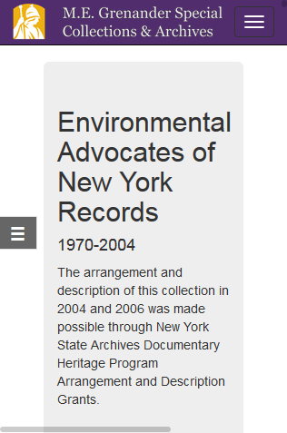
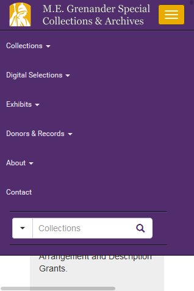
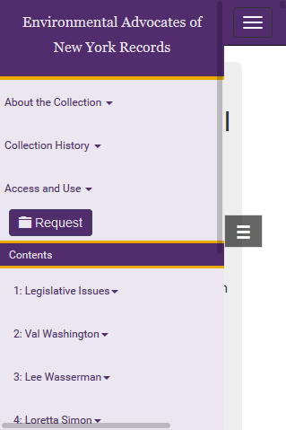
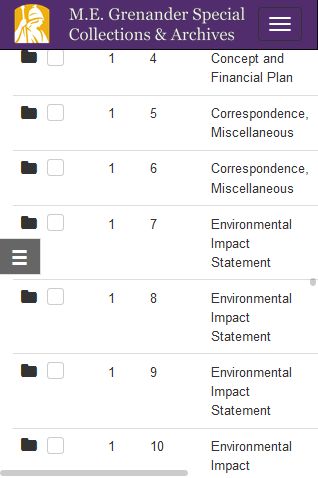
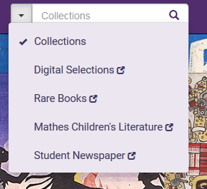

<!doctype html>
<html lang="en">
    <head>
        <meta charset="utf-8">
        <title>reveal-md</title>
        <link rel="stylesheet" href="css/reveal.css">
        <link rel="stylesheet" href="css/theme/black.css" id="theme">
        <!-- For syntax highlighting -->
        <link rel="stylesheet" href="lib/css/zenburn.css">

        <!-- If the query includes 'print-pdf', use the PDF print sheet -->
        <script>
          document.write( '<link rel="stylesheet" href="css/print/' + ( window.location.search.match( /print-pdf/gi ) ? 'pdf' : 'paper' ) + '.css" type="text/css" media="print">' );
        </script>
		<script>
  (function(i,s,o,g,r,a,m){i['GoogleAnalyticsObject']=r;i[r]=i[r]||function(){
  (i[r].q=i[r].q||[]).push(arguments)},i[r].l=1*new Date();a=s.createElement(o),
  m=s.getElementsByTagName(o)[0];a.async=1;a.src=g;m.parentNode.insertBefore(a,m)
  })(window,document,'script','https://www.google-analytics.com/analytics.js','ga');

  ga('create', 'UA-87697094-1', 'auto');
  ga('send', 'pageview');

</script>
    </head>
    <body>

        <div class="reveal">
            <div class="slides"><section  data-markdown><script type="text/template"><link rel="stylesheet" href="css/theme/moon.css">
## No More Finding Aids
A New Frontend for Special Collections & Archives at UAlbany


<br/>
Gregory Wiedeman<br/>
University Archivist<br/>
University at Albany, SUNY<br/>
@gregwiedeman
</script></section><section  data-markdown><script type="text/template">
#Archives are Esoteric

<p class="fragment" data-fragment-index="1">-"intended for or likely to be understood by only a small number of people with a specialized knowledge or interest."</p>

<aside class="notes" data-markdown>secret handshakes and cryptic signposts</aside></script></section><section  data-markdown><script type="text/template">
## This is a direct and fundamental conflict with Web Usability

<iframe src="//giphy.com/embed/3iGe4jEMa59ss" width="480" height="232" frameBorder="0" class="giphy-embed" allowFullScreen></iframe><p><a href="http://giphy.com/gifs/3iGe4jEMa59ss"></a></p>

<aside class="notes" data-markdown>Where the key to usability is making things obvious to all</aside></script></section><section  data-markdown><script type="text/template">
## Esotericism directly undermines archives' primary mission

<aside class="notes" data-markdown>Archives public access systems are not obvious to all users, we need to make archives readily apparent to all</aside></script></section><section  data-markdown><script type="text/template">
<!-- .slide: data-background="img-c4lne/screen0.png" -->

<h2 style="color: black;">Finding Aids are the Problem</h2>

<!--Note: Finding aids are where the rubber meets the road for this usability conflict
Note: core of professional identity?
Note: So what is so terrible about finding aids?-->
</script></section><section  data-markdown><script type="text/template">
## The Finding Aid is Jargon

* Not a popular convention
* Broad to the point of meaninglessness
</script></section><section  data-markdown><script type="text/template">
## The Finding Aid is a pre-Digital Information System

* A system for displaying archival description as a document
* "Modernized" for the web
	* XML  and XSLT
</script></section><section  data-markdown><script type="text/template">
## Users don't want help finding things

## They want help getting things

<ul>
<li class="fragment" data-fragment-index="1">Discovery without delivery, wtf?</li>
<li class="fragment" data-fragment-index="2">"Online Finding Aids"</li>
<li class="fragment" data-fragment-index="2">"Collection Guides"</li>
<li class="fragment" data-fragment-index="2">"Guide to the University Senate Records"</li>
</ul>

	
</script></section><section  data-markdown><script type="text/template">
## Replace Finding Aids with Web Discovery and Delivery Systems

* The best way to provide archival description on the web is not a document
* Web design best practices
* Separation of concerns
* Based on user-testing
</script></section><section  data-markdown><script type="text/template">
## but... we're already doing this!

<p class="fragment" data-fragment-index="1">Practice is changing, not professional identity and literature</p>

<aside class="notes" data-markdown>That's true, new tools are moving us there. This is important for defining professional skills, grad programs, etc.</aside></script></section><section  data-markdown><script type="text/template">
## but... we can't put it all online!

<ul>
<li class="fragment" data-fragment-index="1">No, but we can deliver content both digitally and physically</li>

<li class="fragment" data-fragment-index="2">Make our limitations readily apparent</li>

<li class="fragment" data-fragment-index="3">Move to On-Demand Digitization</li>

</ul>

<aside class="notes" data-markdown>Lets treat our users like adults, they will understand, also helps transparency, this just means we need our design to span digital and physical</aside></script></section><section  data-markdown><script type="text/template">
<!-- .slide: data-background="img-c4lne/screen1.png" -->

<a style="position: absolute; bottom: -500%; color: black; background-color: white; padding: 0px 10px;" href="http://library.albany.edu/archiveDev">library.albany.edu/archiveDev</a>

<aside class="notes" data-markdown>This is our new front-end access system for special collections and archives. Now I have to confess we haven't quite reached these goals, we haven't yet killed the finding aid at UAlbany, but I'm going ot show how we made strides towards that goal</aside></script></section><section  data-markdown><script type="text/template">
<!-- .slide: data-background="img-c4lne/screen2.png" -->

<a style="position: absolute; bottom: -500%; color: black; background-color: white; padding: 0px 10px;" href="http://library.albany.edu/archiveDev">library.albany.edu/archiveDev</a>
</script></section><section  data-markdown><script type="text/template">
<!-- .slide: data-background="img-c4lne/screen3.png" -->

<a style="position: absolute; bottom: -500%; color: black; background-color: white; padding: 0px 10px;" href="http://library.albany.edu/archiveDev">library.albany.edu/archiveDev</a>
</script></section><section  data-markdown><script type="text/template">


<a style="position: absolute; bottom: -500%; color: black; background-color: white; padding: 0px 10px;" href="http://library.albany.edu/archiveDev">library.albany.edu/archiveDev</a>
</script></section><section  data-markdown><script type="text/template">


<a style="position: absolute; bottom: -500%; color: black; background-color: white; padding: 0px 10px;" href="http://library.albany.edu/archiveDev">library.albany.edu/archiveDev</a>
</script></section><section  data-markdown><script type="text/template">
<!-- .slide: data-background="img-c4lne/static2.png" -->

<a style="position: absolute; bottom: -500%; color: black; background-color: white; padding: 0px 10px;" href="http://library.albany.edu/archiveDev">library.albany.edu/archiveDev</a>
</script></section><section  data-markdown><script type="text/template">
<!-- .slide: data-background="img-c4lne/static3.png" -->

<a style="position: absolute; bottom: -500%; color: black; background-color: white; padding: 0px 10px;" href="http://library.albany.edu/archiveDev">library.albany.edu/archiveDev</a>
</script></section><section  data-markdown><script type="text/template">
<!-- .slide: data-background="img-c4lne/fa1.png" -->

<a style="position: absolute; bottom: -500%; color: black; background-color: white; padding: 0px 10px;" href="http://library.albany.edu/archiveDev">library.albany.edu/archiveDev</a>
</script></section><section  data-markdown><script type="text/template">
<!-- .slide: data-background="img-c4lne/fa2.png" -->

<a style="position: absolute; bottom: -500%; color: black; background-color: white; padding: 0px 10px;" href="http://library.albany.edu/archiveDev">library.albany.edu/archiveDev</a>
</script></section><section  data-markdown><script type="text/template">
<!-- .slide: data-background="img-c4lne/fa3.png" -->

<a style="position: absolute; bottom: -500%; color: black; background-color: white; padding: 0px 10px;" href="http://library.albany.edu/archiveDev">library.albany.edu/archiveDev</a>
</script></section><section  data-markdown><script type="text/template">
<!-- .slide: data-background="img-c4lne/fa4.png" -->

<a style="position: absolute; bottom: -500%; color: black; background-color: white; padding: 0px 10px;" href="http://library.albany.edu/archiveDev">library.albany.edu/archiveDev</a>
</script></section><section  data-markdown><script type="text/template">


<a style="position: absolute; bottom: -500%; color: black; background-color: white; padding: 0px 10px;" href="http://library.albany.edu/archiveDev">library.albany.edu/archiveDev</a>
</script></section><section  data-markdown><script type="text/template">


<a style="position: absolute; bottom: -500%; color: black; background-color: white; padding: 0px 10px;" href="http://library.albany.edu/archiveDev">library.albany.edu/archiveDev</a>
</script></section><section  data-markdown><script type="text/template">


<a style="position: absolute; bottom: -500%; color: black; background-color: white; padding: 0px 10px;" href="http://library.albany.edu/archiveDev">library.albany.edu/archiveDev</a>
</script></section><section  data-markdown><script type="text/template">


<a style="position: absolute; bottom: -500%; color: black; background-color: white; padding: 0px 10px;" href="http://library.albany.edu/archiveDev">library.albany.edu/archiveDev</a>
</script></section><section  data-markdown><script type="text/template">


<a style="position: absolute; bottom: -500%; color: black; background-color: white; padding: 0px 10px;" href="http://library.albany.edu/archiveDev">library.albany.edu/archiveDev</a>
</script></section><section  data-markdown><script type="text/template">


<a style="position: absolute; bottom: -500%; color: black; background-color: white; padding: 0px 10px;" href="http://library.albany.edu/archiveDev">library.albany.edu/archiveDev</a>
</script></section><section  data-markdown><script type="text/template">
<!-- .slide: data-background="img-c4lne/request1.png" -->

<a style="position: absolute; bottom: -500%; color: black; background-color: white; padding: 0px 10px;" href="http://library.albany.edu/archiveDev">library.albany.edu/archiveDev</a>
</script></section><section  data-markdown><script type="text/template">
<!-- .slide: data-background="img-c4lne/request2.png" -->

<a style="position: absolute; bottom: -500%; color: black; background-color: white; padding: 0px 10px;" href="http://library.albany.edu/archiveDev">library.albany.edu/archiveDev</a>
</script></section><section  data-markdown><script type="text/template">
<!-- .slide: data-background="img-c4lne/search1.png" -->

<a style="position: absolute; bottom: -500%; color: black; background-color: white; padding: 0px 10px;" href="http://library.albany.edu/archiveDev">library.albany.edu/archiveDev</a>
</script></section><section  data-markdown><script type="text/template">
<!-- .slide: data-background="img-c4lne/search12.png" -->

<a style="position: absolute; bottom: -500%; color: black; background-color: white; padding: 0px 10px;" href="http://library.albany.edu/archiveDev">library.albany.edu/archiveDev</a>
</script></section><section  data-markdown><script type="text/template">
<!-- .slide: data-background="img-c4lne/search3.png" -->

<a style="position: absolute; bottom: -500%; color: black; background-color: white; padding: 0px 10px;" href="http://library.albany.edu/archiveDev">library.albany.edu/archiveDev</a>
</script></section><section  data-markdown><script type="text/template">
<!-- .slide: data-background="img-c4lne/webarchives.png" -->

<a style="position: absolute; bottom: -500%; color: black; background-color: white; padding: 0px 10px;" href="http://library.albany.edu/archiveDev">library.albany.edu/archiveDev</a>
</script></section><section  data-markdown><script type="text/template">
<!-- .slide: data-background="img-c4lne/webarchives2.png" -->

<a style="position: absolute; bottom: -500%; color: black; background-color: white; padding: 0px 10px;" href="http://library.albany.edu/archiveDev">library.albany.edu/archiveDev</a>
</script></section><section  data-markdown><script type="text/template">
<!-- .slide: data-background="img-c4lne/problem1.png" -->

<a style="position: absolute; bottom: -500%; color: black; background-color: white; padding: 0px 10px;" href="http://library.albany.edu/archiveDev">library.albany.edu/archiveDev</a>
</script></section><section  data-markdown><script type="text/template">
 

<a style="position: absolute; bottom: -500%; color: black; background-color: white; padding: 0px 10px;" href="http://library.albany.edu/archiveDev">library.albany.edu/archiveDev</a>
</script></section><section  data-markdown><script type="text/template">
## What worked

* Bootstrap!
* Schema.org
* User understanding of access
</script></section><section  data-markdown><script type="text/template">
## Limitations

* Did user testing, not fully intergrated into developement
* Double menu on mobile
* Different systems, no single index
* Difficulty of delivering search results to document
* Large collections are slow
	* problem for mobile
</script></section><section  data-markdown><script type="text/template">
## No More Finding Aids
A New Frontend for Special Collections & Archives at UAlbany


<br/>
Gregory Wiedeman<br/>
University Archivist<br/>
University at Albany, SUNY<br/>
@gregwiedeman</script></section></div>
        </div>

        <script src="lib/js/head.min.js"></script>
        <script src="js/reveal.js"></script>

        <script>
            function extend() {
              var target = {};
              for (var i = 0; i < arguments.length; i++) {
                var source = arguments[i];
                for (var key in source) {
                  if (source.hasOwnProperty(key)) {
                    target[key] = source[key];
                  }
                }
              }
              return target;
            }

            // Optional libraries used to extend on reveal.js
            var deps = [
              { src: 'lib/js/classList.js', condition: function() { return !document.body.classList; } },
              { src: 'plugin/markdown/marked.js', condition: function() { return !!document.querySelector('[data-markdown]'); } },
              { src: 'plugin/markdown/markdown.js', condition: function() { return !!document.querySelector('[data-markdown]'); } },
              { src: 'plugin/highlight/highlight.js', async: true, callback: function() { hljs.initHighlightingOnLoad(); } },
              { src: 'plugin/notes/notes.js', async: true, condition: function() { return !!document.body.classList; } },
              { src: 'plugin/math/math.js', async: true }
            ];

            // default options to init reveal.js
            var defaultOptions = {
              controls: true,
              progress: true,
              history: true,
              center: true,
              transition: 'default',
              dependencies: deps
            };

            // options from URL query string
            var queryOptions = Reveal.getQueryHash() || {};

            var options = {};
            options = extend(defaultOptions, options, queryOptions);
            Reveal.initialize(options);
        </script>
        
          <script src="/scripts/slides"></script>
    </body>
</html>
